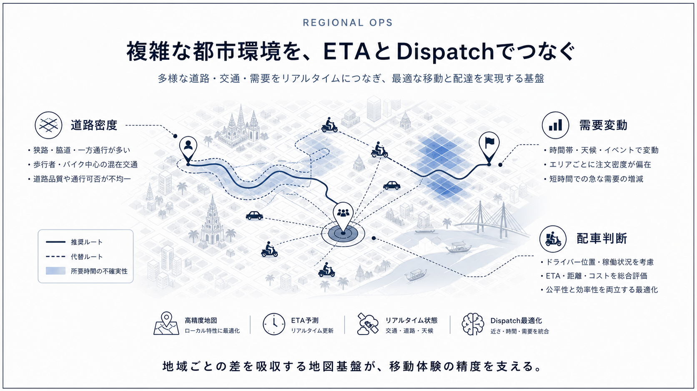
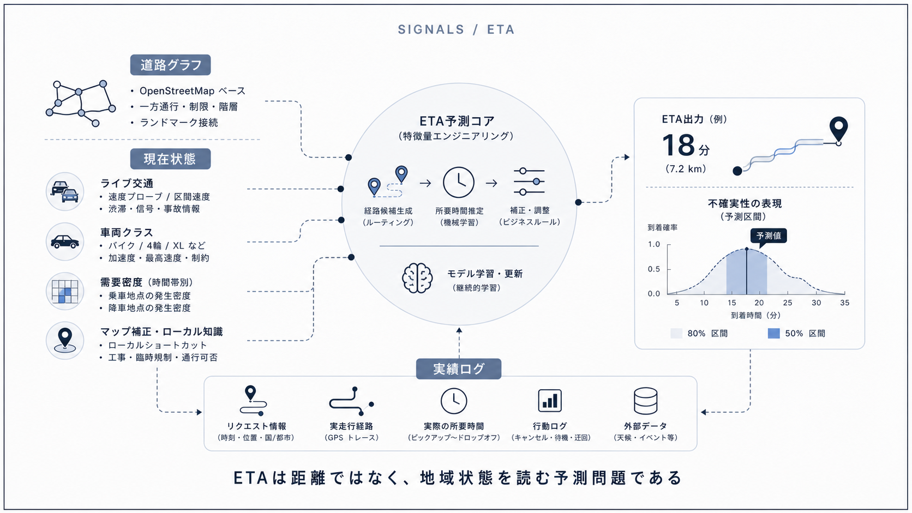
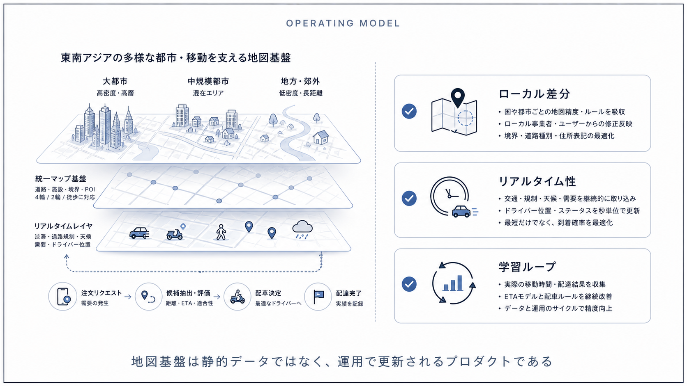

Question Note / Geospatial Architecture
Grab: 東南アジアの地図・ETA・Dispatch基盤

何をしている企業か
東南アジアを中心に、配車、配送、決済などを展開するスーパーアプリ企業。地域ごとに地図品質、住所体系、交通事情が大きく異なる。
位置情報で解いている課題
地域差のある道路、住所、POI、交通状況の中で、配車・配送のETAとDispatchを成立させる必要がある。欧米の地図前提をそのまま使えない地域適応が重要になる。

公開されている技術情報
使っている地理空間技術
Grab Tech BlogではGrabMaps、ルーティング、ETA、配送・配車基盤に関する発信がある。地図データ整備とアプリ運用データを組み合わせる点が特徴。
「独自GIS」と呼べる部分
独自GIS的な部分は、自社運用で得られる位置・POI・道路・ドライバー挙動を地図やETAに戻すループ。公開情報からは全内部構成は分からないため、独自地図・ETA・Dispatchの統合基盤として見る。
PostGISとの違い
PostGISは自社DBの空間演算に使えるが、Grab型では地域の地図品質を補うデータ収集、道路補正、ETA、Dispatchまで必要になる。DB拡張だけでは地域適応は完結しない。
アーキテクチャ上どこに入るか
Mobile App
↓
Backend API
↓
Geospatial Engine / Index
↓
DB / Cache
↓
Map / Navigation APIこの図でいう Geospatial Engine / Index が、空間インデックス、ルーティング、ETA、マッチング、リアルタイム位置キャッシュを吸収する場所です。PostGISは主に DB / Cache 側の保存・検索基盤として使い、Mapbox等の地図APIは Map / Navigation API 側に置きます。
トラックナビアプリに応用できる点
トラックナビでは、日本の大型車制約、駐車場入口、休憩所の実運用データを集め、地図APIだけでは足りない属性を自社データとして育てる考え方が参考になる。
まだ真似しなくてよい点
自社地図を全面的に作ること、国全体の道路品質改善を背負うことはMVPでは不要。
将来スケールしたときに参考になる点
ドライバー投稿、走行ログ、施設入口情報が貯まったら、Mapbox等の上に自社補正データを重ねる。
結論
Grabの事例は、独自GISを「巨大な地図DB」ではなく、空間インデックス、ルーティング、ETA、マッチング、リアルタイム位置キャッシュ、分析基盤の組み合わせとして読むと理解しやすいです。トラックナビMVPでは、まずPostgreSQL + PostGIS + Mapboxで実用範囲を作り、後からH3/S2/Redis GEO/独自インデックスを足す順番が安全です。
